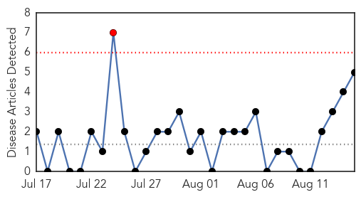
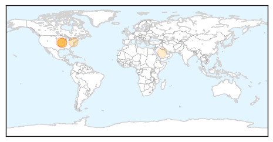

Meningitis
30-Day Web Trend
1 alerts, 0 warnings

30-Day Twitter Trend
1 alerts, 0 warnings

Article Locations
Article Confidences
Top Articles:
- 0.977
- Meningitis Outbreak Affects Babies in Kansas City
- 0.917
- Viral Infections in 14 Kansas City-area Infants Under Investigation
- 0.904
- Rare Virus, HPeV3, Sickens And Hospitalizes 14 Babies In Kansas City Area, Causing Inflammation And Meningitis
- 0.775
- Bacterial Meningitis Decreased Across US
- 0.588
- Meningitis Research Foundation issues vaccine warning for Hajj pilgrims
Top Tweets:
-
No tweets found for Aug 15, 2014
Pertussis
30-Day Web Trend
1 alerts, 0 warnings

30-Day Twitter Trend
0 alerts, 0 warnings

Article Locations
Article Confidences

Top Articles:
Top Tweets:
-
No tweets found for Aug 15, 2014